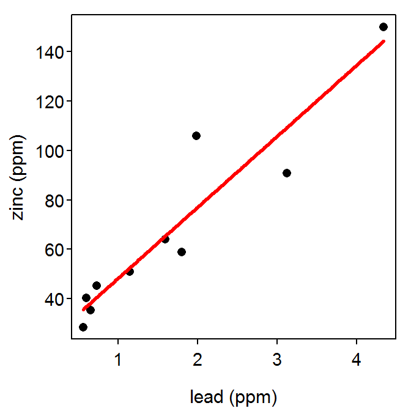

Rainbow trout, mountain whitefish and large-scale suckers taken from four different localities along the Spokane River (eastern Washington) during summer 1999 were analyzed for three heavy metals (lead, zinc and cadmium). Metal contents are reported in milligrams of metal per kilogram of fish (mg/kg), which is equivalent to parts per million (ppm). The source of the heavy metals is upstream from Spokane in the Coeur d’Alene mining district of northern Idaho, one of the richest, and most heavily contaminated, mining districts in the U.S. Acid mine drainage directly from shafts and adits, and from leaching of metal rich mine tailings (waste rock), as well as metal-rich discharges from smelters, have contaminated many streams, rivers and lakes in the Spokane/Coeur d’Alene watershed. Metals are both dissolved in the river water and found as minute particles that can enter the food web at various stages. The lead and zinc data are found in a tab-delimited text file at MetalsFish.csv. Note that the authors are interested in determining if zinc concentrations can be explained by knowing lead concentrations. Use this information to answer the questions below.
> library(NCStats)
> setwd("C:/aaaWork/Web/GitHub/NCMTH107/lecture/HOs")
> ( sr <- read.csv("MetalsFish.csv") ) lead zinc
1 0.73 45.3
2 1.14 50.8
3 0.60 40.2
4 1.59 64.0
5 4.34 150.0
6 1.98 106.0
7 3.12 90.8
8 1.80 58.8
9 0.65 35.4
10 0.56 28.4> ( lm.sr <- lm(zinc~lead,data=sr) )Coefficients:
(Intercept) lead
19.54 28.73 > rSquared(lm.sr)[1] 0.8846028> fitPlot(lm.sr,xlab="lead (ppm)",ylab="zinc (ppm)",main="")
> predict(lm.sr,data.frame(lead=2.5)) 1
91.35772 > ( yhat <- predict(lm.sr,data.frame(lead=3.2)) ) 1
111.4654 > 100-yhat 1
-11.46538